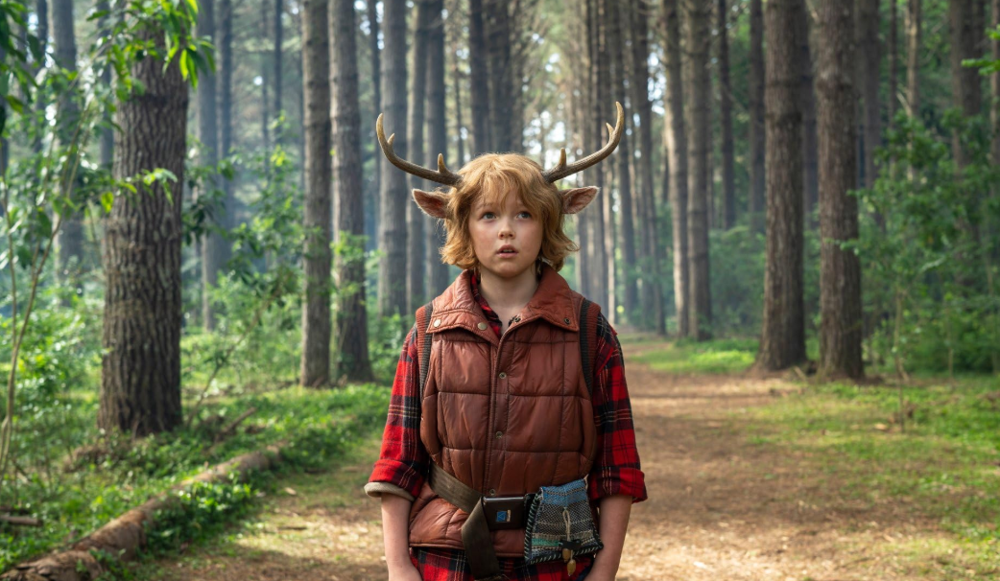

Sweet Tooth
Children's and Family Emmy Award (2022):
- Melhor mixagem de som em Programa
de ação ao vivo.
Children's and Family Emmy Award (2023):
- Melhor Ator ou Atriz Coadjuvante
em Programa Pré-escolar, Infantil ou Juvenil;
- Melhor Direção de Fotografia em
Programa de Ação ao Vivo com Câmera Única.
Nota(IMDb): 7.7/10;
Nota(Rotten Tomatoes)92% de
aprovação crítica
Onde assistir: Netflix
Review
Sem dúvida, Sweet Tooth é uma das minhas séries favoritas, trazendo um cenário maravilhoso com figurinos
bem elaborados e super fofos!
A escolha do elenco, especialmente do protagonista Gus, interpretado por Christian Convery, foi
certeira. O personagem é inocente, bondoso, adorável e leal — sempre se importando com o bem-estar de
seus companheiros e fazendo de tudo para ajudá-los e protegê-los.
A história é rica em ação, drama e reviravoltas (plot twists), sendo uma das melhores produções que já
vi. O crescimento de Gus é algo lindo de se acompanhar, e a cada episódio fica aquele gostinho de "quero
mais".
O figurino dos híbridos, sem dúvida, é a minha parte preferida: totalmente bem-feitos e realistas. Um
exemplo marcante são as orelhas de cervo do Gus, que se mexem ao longo da série, dando um toque mágico.
A trilha sonora também merece destaque, com músicas lindas como "Je te laisserai des mots", escolhidas a
dedo para emocionar cada cena.
A história é linda e emocionante, com personagens marcantes e vilôes muito bem elaborados, a série retrata bem o preconceito e a discriminação que acontece no mundo real e é lindo a forma em que os híbridos lidam com isso.
Se fosse para eu recomendar uma série, com certeza recomendaria Sweet Tooth.